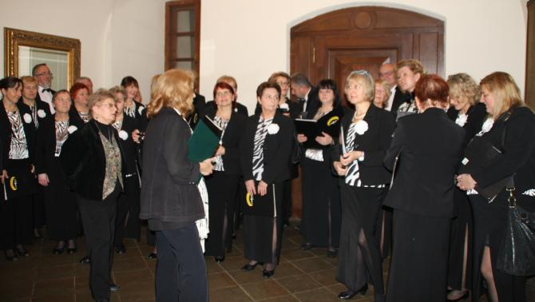
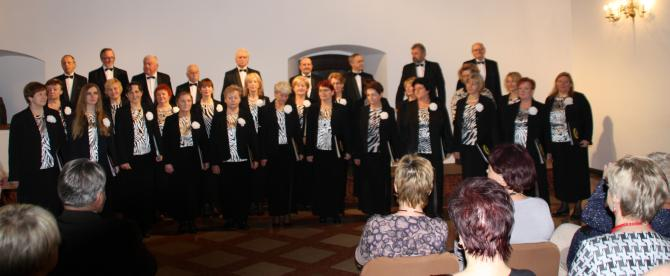
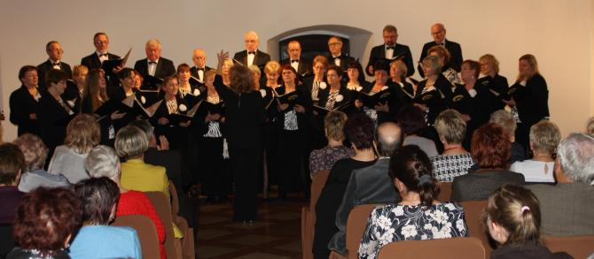
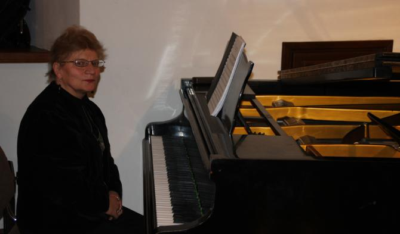
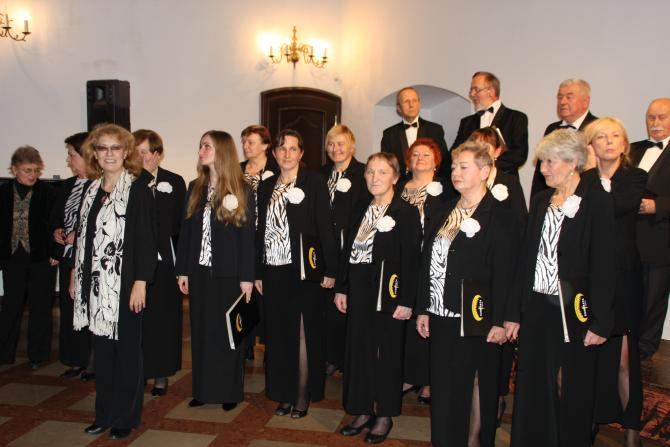
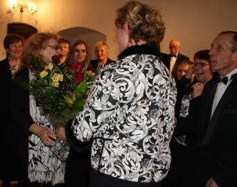
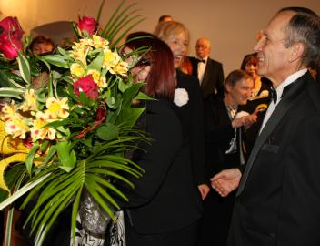
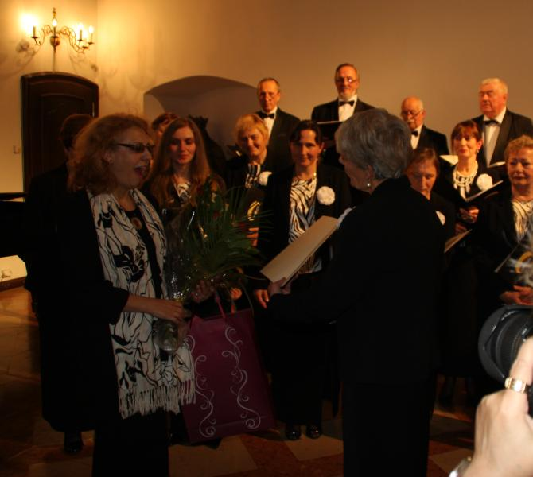
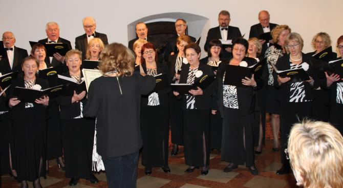
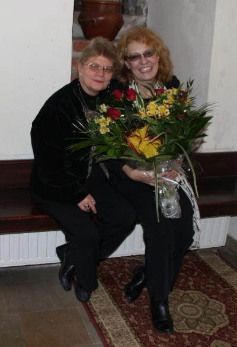

A tymczasem w Cameracie...
.
2015-11-20
Niepołomice witają nas deszczem, ale nam to nie przeszkadza, gdyż idziemy na koncert w zamku niepołomickim a tam jest pięknie. Zaczynamy od wysłuchania kilku słów od p. dyrygent.
Dzisiaj śpiewamy dla trzech UTW : Kłaja, Niepołomic i Wieliczki. Widzowie już się zbierają w pięknej zamkowej sali, więc pora zacząć koncert.

Dyryguje i prowadzi Izabela Szota

a akompaniuje nam Małgorzata Westrych.

Koncert wypadł pięknie, więc owacje na stojąco od publiczności i uśmiechnięta buzia dyrygena.

A teraz niespodzianka dla p. dyrygent … kwiaty z okazji 25 lat pracy artystycznej
 
oraz piosenka napisana przez Ewę Tracz na tę okazję i pięknie oprawioną przez Basię Borowiec (zaskoczenie chyba widać:)).

Piosenka na Jubileusz 25 - lecia pracy artystycznej
Izabeli SzotyBywaj Izo zdrowa, sił Ci dużo trzeba.
By zarobić pracą na kawałek chleba.
Ale samym chlebem przecież człek nie żyje
dlatego Twe życie tyle sztuki kryje.
Koncertujesz sama lub z Konradem w parze,
otrzymując za to należytą gażę.
Lecz, że nie wystarcza na wszystkie swawole
trzeba było podjąć jeszcze pracę w szkole.
Po cóż ta łza w oku, po cóż serca bicie,
wiemy, że to kochasz, robisz znakomicie.
Prowadź Cameratę, dyrektoruj szkole,
nie martw się, że sukces, innych w oczy kole.
(Bis:)
Żyj nam Jubilatko w zdrowiu i radości
a nas traktuj dzisiaj nie jak chór lecz gości.
Niestety sama musiała podyrygować utworem na swoją cześć, aby chór nie dał plamy.

Patrząc na obie panie możemy sądzić, że koncert się udał. Jak myślicie ?


© Stowarzyszenie Muzyczne Chór Camerata Wieliczka
Projekt i wykonanie:  Prowadzenie strony: Małgorzata Wysocka-Cebula
Prowadzenie strony: Małgorzata Wysocka-Cebula